Design Awareness
By Mark Seymour
Logorrhea
Snow is falling outside my window as I write this, so it's still officially winter. But this month we'll leverage off our winter sports company logo to discuss the basics of logos and logotypes.
The AlpineGear logo, just to be confusing, is actually a logotype, or a logo constructed solely from letters or words. We could refer to logotypes as a subgroup of logos, but there isn't a different word for a logo that's just an image rather than text, so this system is illogical:
- Logo:
- Logo
Logotype
If someone knows of a word that would be more representative than the "logo:logo" construct, or can make up a good one, let me know.
As I noted in the January column, a pure logo (that darnedlogo:logo naming problem again) is an icon, a picture, a 'bug' that communicates the image (and hopefully, if only subconsciously, the name) of the company without additional words. Companies that sell products (something that needs to be recognizable at a distance, whether on a building or a shelf) often use logos, and for companies where instant recognition (from a freeway at high speed, for example) is important, this is a defining quality of the mark.
Here are some well-known examples (well, to Linux users, anyway):
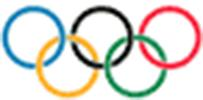
Note that the first and last images are capable of communicating the name of the company (at least to English-speakers, though even in other languages they'll know what it refers to) to someone who has never seen the logo before, or may never have heard of the company before. Now that's good design!
An entire study could probably be done just on logos using various ring images:
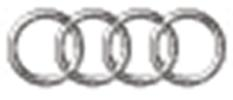
Isn't the mind amazing? There's not a name in sight, and yet you know who these represent, don't you?
Here are some familiar logos that incorporate letters or words into a logo-shaped image and, while very recognizable (even at a distance), are neither pure logos or pure logotypes (by my definition, anyway):

Without prior knowledge, of course, you couldn't determine from these designs that BMW stands for Bayerische Motoren Werke (or that the logo is derived from a spinning propeller, since BMW really started out as Bayerische Flugzeug-Werke, making aircraft engines during World War One), or that CNN stands for Cable News Network, or that IBM stands for International Business Machines, or especially that LG doesn't stand for anything (though it's apparently derived from their product lines, two of which are 'Lucky' and 'Goldstar', and represents the 'Face of the Future'). Virgin, of course, is into so many business segments now (including space travel) that almost any other logo would be too limiting.
Oftentimes, to provide otherwise obscure name information, the company will settle on a combination logo/logotype:
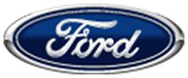
But fewer and fewer people know that Henry Ford perfected the assembly line and made cars cheap enough for the working man to own. (Among car company names, even fewer people remember the racing career of R.E. Olds, founder of the Oldsmobile company, let alone the line of trucks by his REO company.) GSK reportedly paid a million dollars for the 'guitar pick' logo and then had to settle a suit with the pork producers (not that I'm implying any similarity, of course, in shape, type style, bleed, or other graphical aspects):
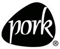
A logotype is the company name used in a particular typography that, hopefully, also communicates the image of the company. Here are some recent examples from the Internet (the Mapquest and Yahoo! logotypes even come complete with their own punctuation, though I'm never sure if that Mapquest logo is excited or just sweating):
And, just to be fair (as if; see caveat below), the Gates Empire logotype and logo/logotype:
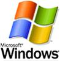
Here are some more, from various points on the economic compass. These are designed to work well at different sizes, which is important when you're using it on everything from signage to small objects or packaging:
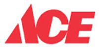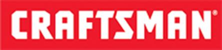
The true classic among logotypes, of course, is this one:
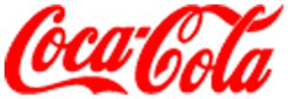
Along with the trademarked shape of the original glass bottle, it is the most widely recognized brand symbol in the world. (If a designer were to emulate it today, including its illegal drug reference and obscure agricultural product reference and archaic script design, he'd likely be fired by the client.)
But, even with the best of intentions, sometimes you never know how your logo is going to end up being used:
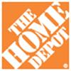 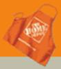
Companies often can't make up their minds whether they want a logo or a logotype, and so they end up with a mark that's both (and often doesn't work well as either):
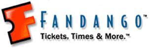
Most of these, like many current logos and logotypes, violate my old typography instructor's adage about not using all-caps: it's not nearly as readable, especially in small sizes, as upper and lower case. (Though the Fandango and Citizens logos try to cheat by using a big leading cap with the small caps; the late Professor Arnold Bank, bless him, would give them all a bad grade.)
These four examples show why you should make a choice early on, and get the client to agree. Remember, as we showed above, the best logos stand on their own without any text, and the best logotypes don't have any imagery attached. As Chuco might have said in a graphic designer's cut of The Good, The Bad, and the Ugly: "If you're going to logo, logo. If you're going to logotype, logotype". My sentiments exactly.
[Caveat for the following: I worked for Apple/Claris for a dozen years, and still do my own work on a Macintosh. I was even involved for awhile at Regis McKenna Advertising when Apple barely existed, during the time the striped logo was born. It took weeks, and many thousands of dollars in color separations, to determine the exact percentages of four-color-process used in the now-almost-forgotten rainbow stripes. (And, no, the stripes had nothing to do with the gay pride movement when they started or when they ended.) For those interested in the history of these changes, see the Kelley Ad site for some of the earliest work on the Apple logo, along with this list of sites of Apple history.]
Note that companies like Apple may use a logo in one situation on a product and a logotype in another situation, but not usually both in combination; this avoids excessive and sometimes difficult trademarking requirements (remember to multiply your trademark registration by about 50 for worldwide coverage; see these lists of trademarks from both Apple and Microsoft for how many logotypes may need to be designed and trademarked for a large client):
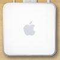 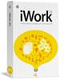
Logos or logotypes may change, due to graphic style changes or market pressures, during the company's lifetime. The Apple logo is a classic example:
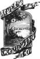 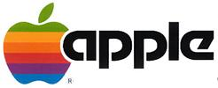 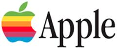
Even when they decided to kill the text portion of the logo and just concentrate on the fruit, it was redesigned (or at least recolored) many times over the years:
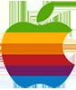 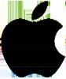 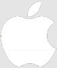
Sometimes more than one variant existed at the same time, for differing uses; the solid red and solid black logos were used alongside each other for many years, and the white logo appeared at first only on brown cardboard product boxes. The Aqua logo, of course, ushered in the OS X era, and engendered an entire new graphic gestalt now used for products and services totally unrelated to the Macintosh, or even computers.
Other than a trip down memory lane for those Apple fanatics among us (so sue me; this column is free), what have we learned from this review of corporate marks about designing logos and/or logotypes?
First off, decide what's important. Is the name of the company (Fred's Shoes) the most vital information, or is it having brand recognition (Nike) no matter where the mark appears? If it's the name, consider a logotype. If it's a universal mark, consider a logo.
Weigh the need to have both a 'bug' and the company name as part of the design. My own work is often done under the trademark 'Proofmark' for design jobs or Proofmark Publishing, and I use a mythological beast as my icon:
While my gryphon often sits alongside or atop the Proofmark logotype, it is not a required part of it. The two pieces can coexist, with different positioning or scaling as appropriate, or appear separately; this gives my own corporate identity more flexibility. If, for instance, I was producing a piece for or sending an invoice to some country or organization that disliked mythological beasts (and don't think they don't exist), I could leave it off without having to totally rework all my pieces.
This points out the need to review the scope of the use of the logo. Is it for Fred's Shoes, and won't be seen outside the circulation of the local newspaper or the range of the local television station? (You did think about how it was going to be used in video images, didn't you? Or in PowerPoint presentations?) Or is it for some multinational corporation whose products are sold in 172 countries? If it's global, you need to worry about your logo symbology and how it will be perceived in those markets; dogs aren't perceived well in certain countries, and other images can appear either too sacred, like crosses, or too profane, like body parts, in some cultures. If you're using a name or word, does it translate into something counterproductive (the famed 'Nova' car from Chevrolet; meaning 'no go', it didn't sell in Latin America for some reason) or downright obscene in another language?
How many countries your mark will be used in drives how many trademark applications you'll have to make. (See http://www.inta.org/ for help with this.) Remember, however, that you should protect your marks even in countries where, for the moment, you're not selling or even planning to sell; graymarket (quasi-legal) or blackmarket sales can be used to defeat your trademark in those and other countries. Real words (screwdriver or feather) are going to be harder to trademark; this is why there's an entire industry built around naming products with nonsensical or semi-recognizable names.
Then there's scalability and legibility.
Scalability means you can use the mark really big or really small, and have it be recognizable at either extreme:
Don't think you'll ever need it really big? What about when the client wants it to fill the entire back wall of her store? Or a street-level billboard? Don't think you'll ever need it really small? Take out your designer sunglasses and look at the logo or logotype on the inside of the temples. That's small.
Legibility means the mark is readable against a wide range of backgrounds; using different color ways can seriously improve legibility, especially in smaller sizes:
But there are cases where you, as the designer, will just have to stamp your pretty little boot-shod foot and insist that, in order for your precious logo design to work, all underlying screen images, corporate identity paper, bus stop transparencies, box cardboard, and email backgrounds will have to represent the color PMS 666. (Just kidding; a cool designer would specify a Toyo color, right?)
Insisting that a mark must sit on a specified color has its own limitations, of course; paper doesn't always come in the right color for a particular usage (laser printers, box board), and you can't afford to print four-color-process on every job. It also binds your hands when you're designing for the Web, as photos and small text don't show well on a colored background.
Mostly, you should start the design with white as a background; paper always comes that way, and most electronic media display white as a default. However, there are going to be times where, for cost or marketing or political reasons (printing on recycled paper, for instance), you will have to use your mark on a background that's a color. This is where a universal mark (if there is such a thing; I can think of situations, like metallic labels, where almost no color other than black works well) or a predetermined range of 'legal' logo colors comes in handy.
Font usage has become more critical, as well, since so much corporate information is now being presented via the Web. Using cross-platform and cross-browser fonts can reduce how much data needs to be generated as images and how much can relied on to be in the viewer's font list. (This column, for instance, is set to display in the generic fonts on your machine.) Anything that is spec'd for a particular font runs the risk (or near-certainty) of 'blowing up' on a viewer's computer. Any piece that must be imported as a graphic image slows down web file transfer, and runs the risk of printing incorrectly.
Let's analyze our own logo against these criteria:
It's a logotype, pure and simple. It will have to be provided electronically as a PNG or similar format, as few computers will have the fonts in residence, but it prints well, both in commercial and desktop forms.
It scales well: but does better small, as do most logos, in one color:
We've provided it in several colorways, for good legibility in different media:
It totally fails as a recognizable mark outside English-speaking countries, unless it garners enough familiarity (think Adidas, Nike, Kodak, Apple, even Microsoft) for that not to matter. Of course, that may be enough marketplace for even a large company, and people using the Internet in other countries are used to dealing with English-only websites. (Note, however, that we provided access on the Landing Page in the February column to translated pages for customers in major non-English-speaking markets.)
I hope this has helped you analyze your own logo projects. As ever, let me know if there's a particular aspect of design you'd like covered.
I started doing graphic design in junior high school, when it was still
the Dark Ages of technology. Bill Gates and Steve Jobs were both eleven
years old, and the state of the art was typing copy on Gestetner masters.
I've worked on every new technology since, but I still own an X-acto knife
and know how to use it.
I've been a freelancer, and worked in advertising agencies, printing
companies, publishing houses, and marketing organizations in major
corporations. I also did a dozen years [1985-1997] at Apple Computer; my
first Macintosh was a Lisa with an astounding 1MB of memory, and my current
one is a Cube with a flat screen.
I've had a website up since 1997, and created my latest one in 2004. I'm
still, painfully, learning how web design is different from, but not
necessarily better than, print.
![[BIO]](../gx/authors/seymour.jpg)